Songs
The Songs tab is your library. You can search by title or artist and filter by the tags you created.
Tap a song and it opens on stage. Hold it to select several at once and add them to a setlist, change their tags, share or delete them.
A few icons may show next to the title: the leaf when essential mode is on, the group with a number when the band sent something, and the computer when the web editor is on. Tapping an icon takes you straight to it.


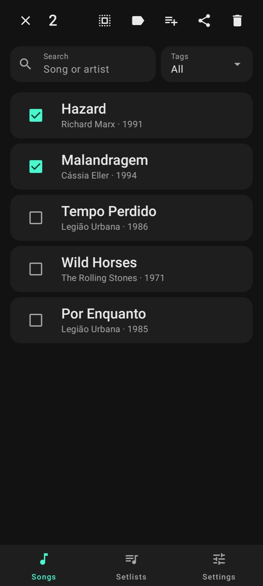
Importing
In Import you look the song up on the sites on your list (Settings → Chord sites or Lyrics sites), open the page and tap Import. The app only downloads what you ask for.
The same button reads a setlist's QR and receives what someone sent with the 3 words.
If the text doesn't look like lyrics or chords, the app won't take it.
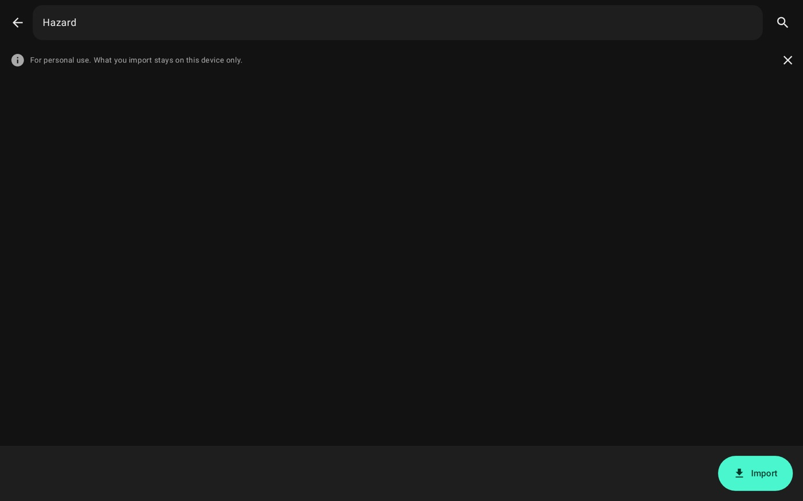
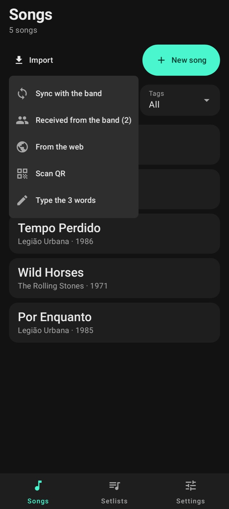
Song editor
In the editor the lyrics get the whole screen. Name, artist, year, BPM, key, capo, tags and backing track are under Song details at the top; tap to open them.
Chords go in brackets, inside the lyrics: [G]Here I [D]go. If you paste a chart with the chords on the line above, the app converts it for you.
The key's − and + transpose the chords a half step at a time. The capo's don't change the diagrams; they only tell you what key it will sound in.
A line with just a name in brackets becomes a part title: [Chorus], [Violin solo]. The shortcuts at the top add the usual parts.
Chords stay written the way the site wrote them (A7+, E7/9, E*), and the app shows the right diagram for each.
To highlight a phrase, select it in the lyrics and tap Highlight (the marker button). It shows painted in the editor and on stage. On stage too: hold the line and tap Highlight this line. The highlight color is in Settings → Stage look.


Setlists
To create a setlist, tap New setlist. With no name it takes the date and time; tap the name to change it. Drag songs to change the order.
In Pick songs, check the songs in the order they'll be played. Search and tags help you find them.
When a setlist comes from someone, the app shows which songs you already have and which are missing. Before creating it, it tells you what will be left out and offers to import the missing ones.


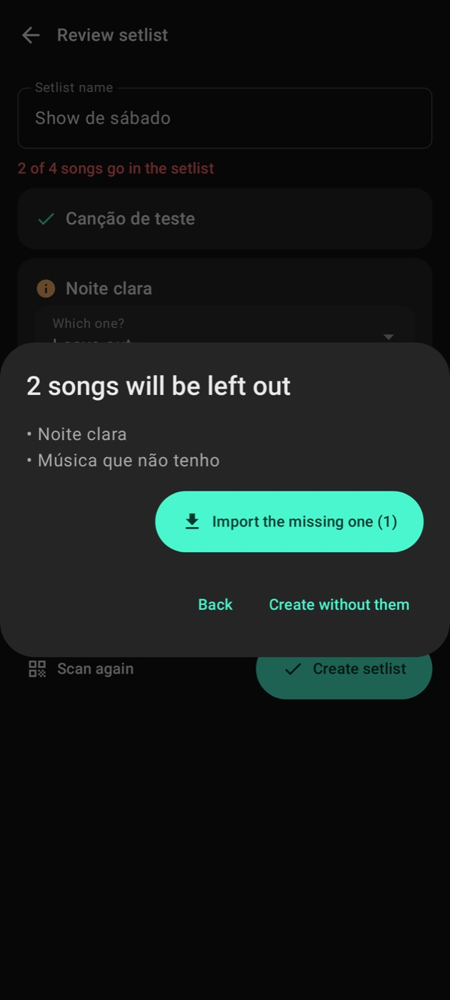
Sharing and QR
In a setlist, Share shows a QR that the other tablet reads with its camera, even offline. Or it makes 3 words to send over the internet; you can just say them. They last 12 hours.
With Bring the songs on, the lyrics go too. The other person only keeps the ones they didn't have; theirs don't change.
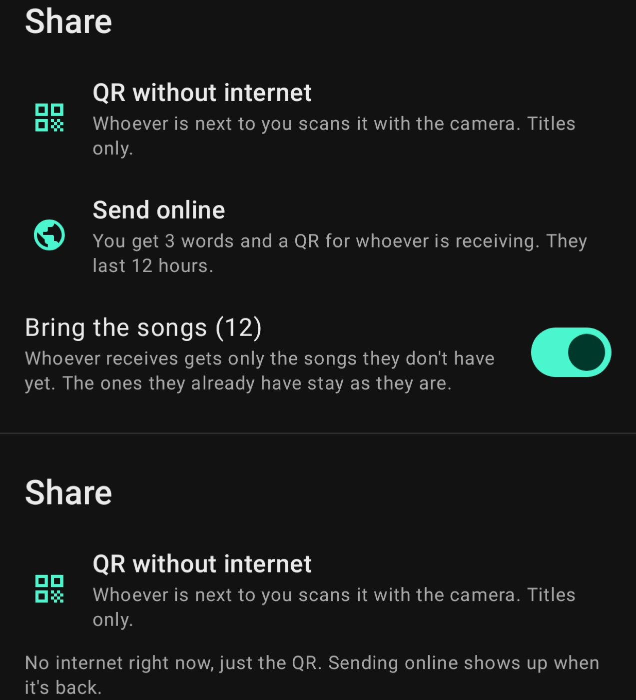
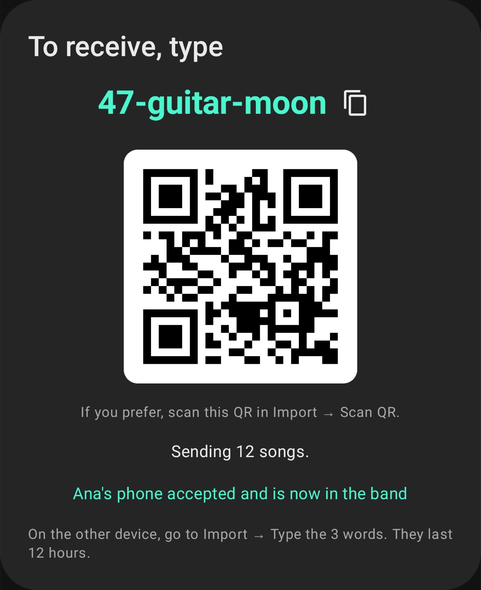

Stage
On stage the lyrics show large, with the chords and parts. Tap the sides or use the pedal to turn the page. If you'd rather scroll, change it in Settings → Stage look.
Key and capo are at the top; tap them to change them right there. While the stage is open nothing pops up over it: whatever the band sends waits.
Tap a chord to see its diagram for guitar, electric guitar, ukulele, cavaquinho or keyboard, with variations and sound. Details shows the chord's degree in the song's key.
The metronome starts at the song's BPM. In Scroll mode, auto-scroll moves the lyrics up on its own.


Backing track
Each song can have a backing track (multichannel OGG, MP3 or WAV). Pick it in Song details. On stage, play only shows on songs that have one.
Sound goes out through a USB audio interface (USB Audio 2.0, 48 kHz) or the device's own output. If the interface disconnects mid-show, the app waits for it to come back instead of sending the sound to the speaker.
When you plug the interface into the USB cable, Android asks whether to open Stagebook. The first time, Stagebook asks for audio access: allow it, so Android remembers the interface. Then, in Android's prompt, pick Stagebook and tap Always: when the cable comes back, the sound returns by itself, without asking anything. Stagebook records nothing; the interface's input only keeps the clock.
When the song ends it stops and goes back to the start. Hold play to change or remove the track and to open the song's mixer.

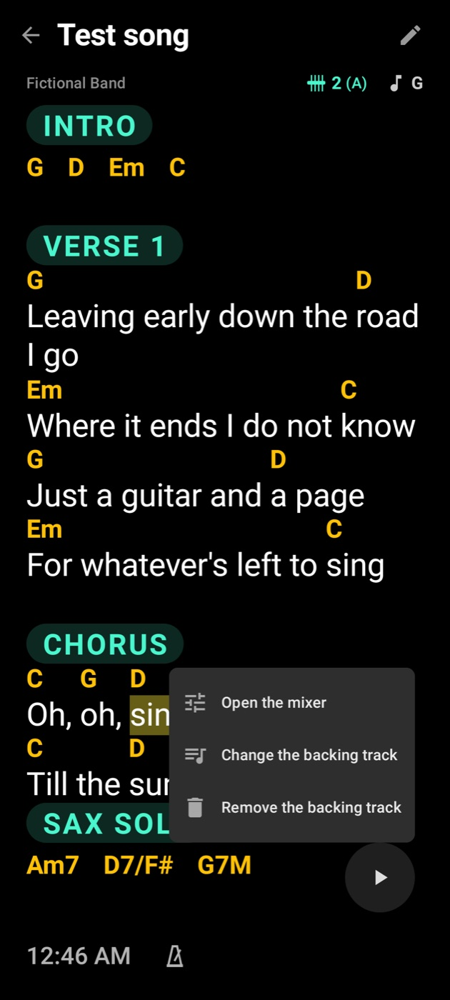
Mixer
The mixer has one channel per file channel: volume, interface output, level matching by average or peak, and a 5-band equalizer.
Tap a channel's name to rename it; the icon next to it opens the other settings, like joining two channels as stereo.
On stage the mixer opens over the song while it plays, so you adjust while listening. With Use the global mixer on, what you change applies to every song; off, only to that song. Settings → Player has the same global mixer, to check it with nothing playing.

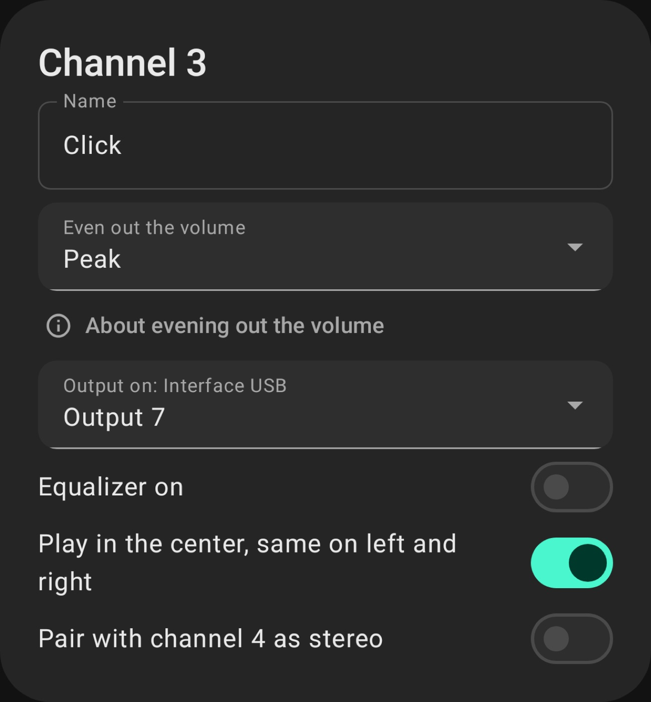

Band
With the devices on the same Wi-Fi (a phone's hotspot works too), one taps Ask to join and the other taps Approve. After that they know each other until someone removes it.
Sending a setlist to the band takes one tap. Whoever is on the same Wi-Fi gets it right away; the others get it over the internet when they open the app.
When something arrives you get a short notice at the bottom and a number on the band icon at the top until you check it. With Lead the band, everyone follows the song you're playing.
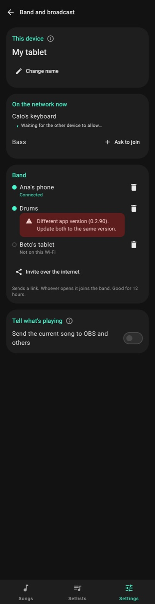
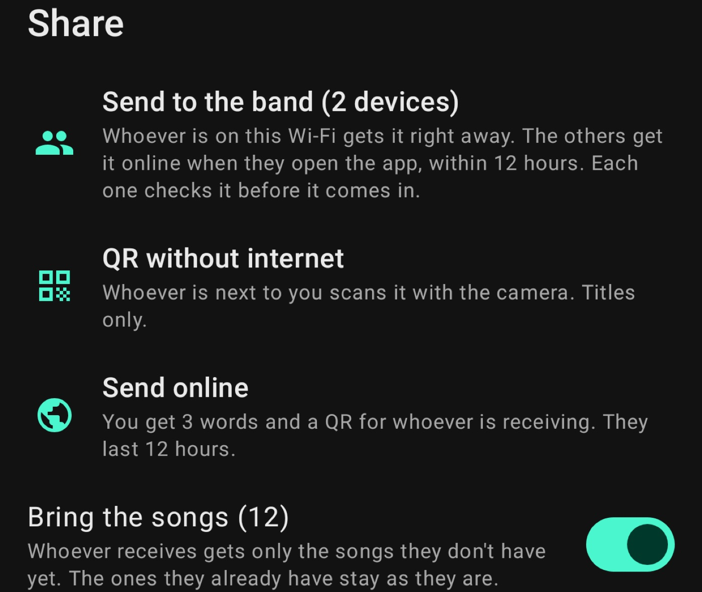
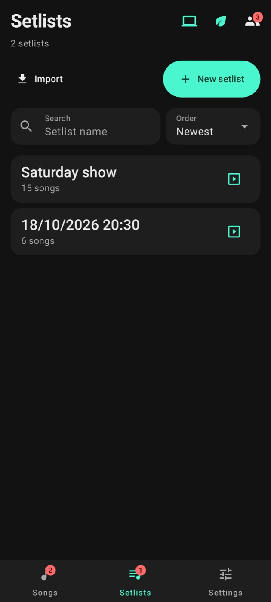

Settings
Essential mode is first on the list. It's for playing alone or on low battery: it leaves only lyrics, chords, diagrams and the pedal. You can turn off just part of it.
Stage look has the fonts, colours, part title size, turning pages or scrolling, and the metronome. In Pedal you connect a Bluetooth or MIDI pedal and choose what each button does. With more than one pedal, the buttons are grouped by pedal, the connected one on top.
With a Bluetooth pedal connected, the on-screen keyboard may disappear: the phone takes the pedal for a real keyboard. That comes from Android, not the app. In Gboard, turn on Settings → Physical keyboard → Show on-screen keyboard. In other keyboards, tap the keyboard icon on the bottom bar and turn on the on-screen keyboard.
In Library and backup you save a .stagebook file with what you choose: songs, setlists, backing tracks and settings. It works as a backup and to pass songs to someone else.


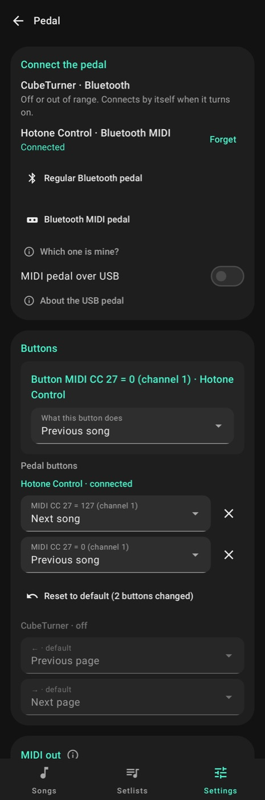
Editor on the computer
In Settings → Edit on the computer, tap Turn on the editor. An address shows up, like http://192.168.0.10:8090. Open it in the computer's browser, on the same Wi-Fi, and tap Ask to come in. The device shows a 4-digit code; approve only if it matches the page.
On the computer you can edit songs with a keyboard (Ctrl+S saves), change key, capo and tags, highlight phrases (Highlight button), build setlists and import by pasting chords, pasting a page address or dropping files.
While the editor is on, the computer icon shows at the top of the tabs. Tap it to see the address and close the editor. It also turns off by itself after 5 minutes unused or when you close the app.
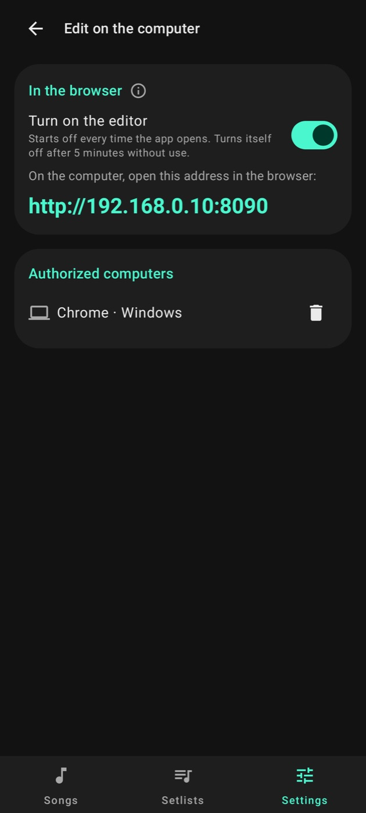


Updating
When a new version is out, the app tells you when it opens. It's best if the whole band uses the same version; a device on another one shows up marked in Settings → Band.
Settings → About has the language, the version and the Open the help button, which brings you to this page (it needs the internet).
Your songs and settings stay on the device. What goes to the band or over the internet is encrypted. There's no account, no ads and no tracking.